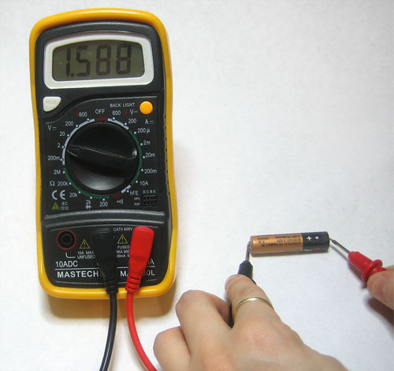

Practical learning library for electronics and automation
Use the source that fits the task. A general course teaches the method, a model guide shows the actual hardware, and a job standard or test sheet defines what to prove.
Compare formal practical courses
- TAFE NSW · Certificate III in Electronics and Communications and its national units show the range of fault-finding work. Compare the amplifier, digital and communications units as well as the computer and optics electives.
- University of Illinois ECE 110 builds from guided circuits and lab reports toward a team design. Use that order when moving from the Workbench’s shared foundation into a project with a demonstration.
- National computer repair unit UEEEC0055 ties model-specific disassembly to known faults and functional retest. Apply it to the evidence choices in P32 and P60.
- Axis Academy network video syllabus combines network, installation and image usability work. Try the device-to-playback practical in P62.
The course comparison and skill map links each source to Workbench exercises and records skills still to develop.
Learn circuits through prediction and measurement

Photo by Limor Fried for Adafruit, scaled for the course. Original photo · CC BY-SA 3.0.

Photo by Hotelsierra1, scaled for the course. Original · CC BY-SA 3.0.

| Guide | How the lesson is arranged | Use it with |
|---|---|---|
| MIT 6.002 · Circuits and Electronics labs | Lab assignments pair theory with equipment, setup and measurements. Work out the expected result before collecting evidence. | P02–P07, P24–P26 and the prepared values in P37. |
| Kuphaldt · Experiments in electric circuits | Parts, related theory, objectives and instructions accompany individual low-cost experiments. | P01–P15 for inexpensive equipment and a theory cross-reference. |
| KiCad · First project | Follows a schematic into footprints, layout and manufacturing files. | P48 for an annotated first-power and repair plan. |
Watch on YouTube · Find the footprints and their connections in the layout. Make room for your probe points before routing. KiCad 9.0 – Getting Started Part 6- Laying Out Your First PCB | DigiKey · DigiKey.
Train for equipment commissioning and service
The BACnet Institute uses self-paced courses on the protocol, the facility manager’s view and security. Start with its BACnet basics, then prove a point value on your isolated trainer. Siemens’ education modules build from a process and I/O list into a program and verification. The Fiber Optic Association gives workbooks and test methods that can be repeated on an actual optical trainer. BACnet courses · Siemens SCE training modules · FOA OTDR lab guide.
When working on actual phone, laptop, robot or drive hardware, identify the exact model, revision and connector before choosing a procedure. iFixit’s close-up step sequences and manufacturer manuals in P32–P36 illustrate what model-specific instructions look like. Use the model’s final tests and preserve the original measurements.
For production electronics, follow a physical fixture build and assembly inspection sequence. Use a known-good board and a known bad board to prove the test catches a specific fault before making pass/fail decisions. Adafruit testing fixture build · SparkFun assembly inspection · P58 first board fixture.
In telecom, learn normal equipment behaviour first. nbn gives model-specific connection and indicator guides. VIAVI demonstrates a controlled connector inspection and recheck. The SharkFest voice workshop follows a symptom through signalling and media evidence. Repeat those decision sequences in P71 broadband support, P72 cross-connects and P75 voice diagnosis. nbn connection box guides · VIAVI fibre inspection · SharkFest voice workshop.
Build a robotics exercise you can debug in layers
Follow the robotics roadmap for a bench-to-production sequence, including software-only practice. Use the Nav2 Jazzy quickstart for mobile navigation and the MoveIt planning-scene exercise for arms.
Northwestern’s Modern Robotics pairs mathematical chapters with focused videos. ROS-Industrial’s workshop has command-line activities and solutions. OpenCV separates camera geometry, image processing and contour extraction. Edge Impulse examples connect data collection and deployment. Use these together with physical ground truth, a fixed test dataset and independent closing tests. Modern Robotics forward kinematics · ROS-Industrial simulator exercise · OpenCV calibration · Edge Impulse worked deployment.
Turn each session into one piece of evidence
- Identify the actual part and write what it should do, with units where relevant.
- Follow the practical sequence and record instrument, settings and a reading for each check.
- Change one input, connection or condition and predict what should move. Restore it and repeat the closing test.
- File one labelled photo, one measured result and a short explanation with the model, revision and source.
Related lessons
- P00 · Your ECE foundation and learning routes
- P37 · Calibrate a 4–20 mA pressure input
- P39 · Build and test a start–stop PLC sequence
- P42 · Repair a mobile robot’s motor, wiring or encoder
- P45 · Build a 2D inspection station with controlled light
- P48 · Design a PCB you can probe and repair
- P53 · Check a fibre loss budget and read an OTDR trace
- C18 · Choose a path into controls, electronics test or automation